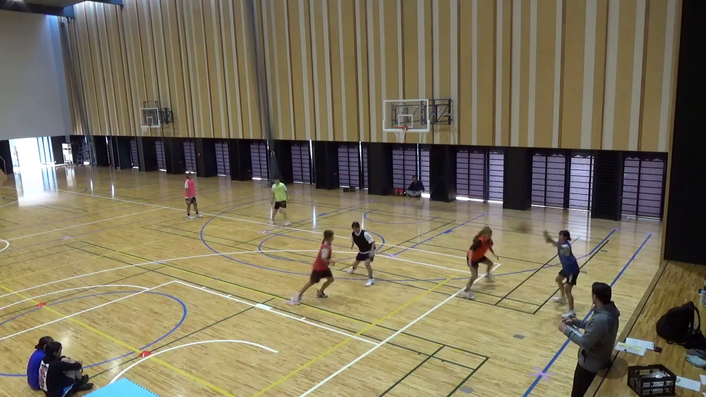
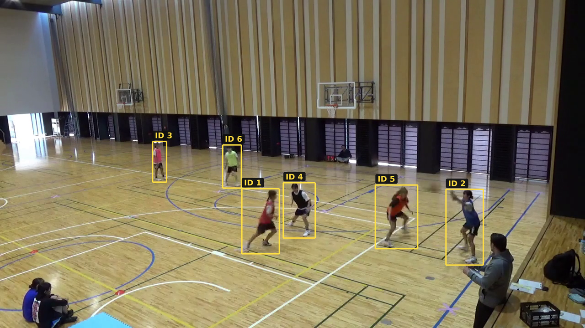
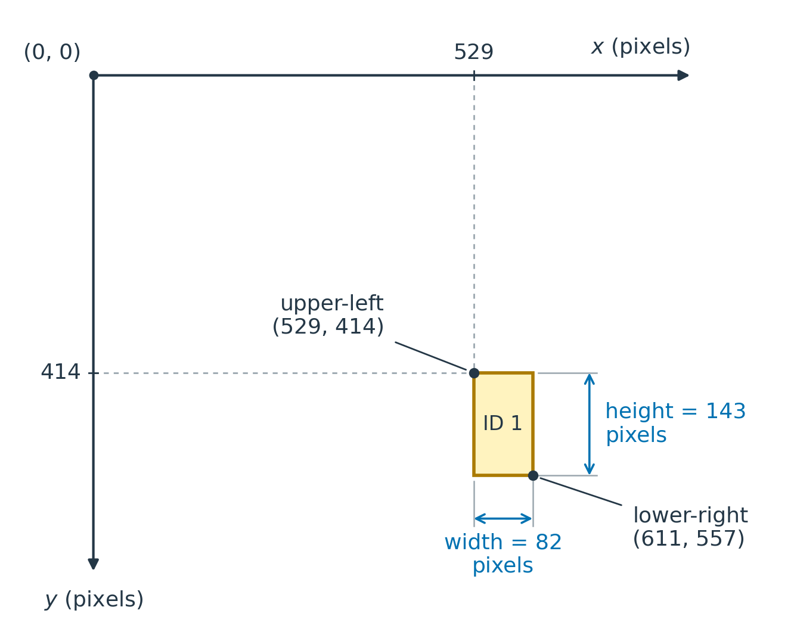

3 Obtaining and visualising the dataset
As mentioned, there is a curated version of the dataset for this application provided on Canvas. However, if you would like to obtain the original dataset, you can find it in the TrackID3x3 public data archive.
Once you have obtained the course dataset you should explore it to understand its structure and contents. Some example explorations are given below. We use some terminology in what follows that you may not be familiar with, though it is hopefully clear from the context; we give more details on this terminology in the next section.
3.1 View the videos
Open basket_S1T4_pre.mp4 from the course dataset and watch the clip. It is about seven seconds long and was recorded with a fixed camera. Notice the six active players, as well as the other people visible around the court. Our task is to track the six active players, rather than every person in the image. A representative frame is shown below.

basket_S1T4_pre.
3.2 View the annotations
The video comes with human-reviewed annotations marking the six active players. Each annotation contains a rectangular bounding box around a player and an anonymous player ID. Within this clip, the same ID refers to the same player across frames. These IDs are part of the supplied annotations.

The file ground_truth_mot.txt contains these annotations as comma-separated rows, with one row per player per frame. In statistics terminology, rows represent our unit of observation, here a ‘player-and–frame’ combination, and these observations are arranged in a long format data table. Note that ground truth is the conventional name for manual/human-checked annotations even though human annotations may in fact contain errors! Here are three of the six rows for frame 50, with some column names added and unused columns omitted:
frame |
track_id |
x_left |
y_top |
width |
height |
|---|---|---|---|---|---|
| 50 | 1 | 529.00 | 414.00 | 82.00 | 143.00 |
| 50 | 2 | 975.70 | 415.64 | 81.93 | 166.28 |
| 50 | 3 | 333.92 | 310.58 | 30.47 | 89.20 |
frameidentifies the video frame, numbered from 1.track_ididentifies the player within this clip.x_leftandy_topgive the image coordinates of the box’s upper-left corner, in pixels.widthandheightgive the box dimensions, also in pixels.
Image coordinates start at the upper-left corner: \(x\) increases to the right and \(y\) increases downwards. For example, the first row describes player 1 in frame 50. Its box starts at \((529, 414)\) and extends 82 pixels to the right and 143 pixels down, ending at \((611, 557)\).

3.3 View the precomputed detections
We have also (separately to the original dataset) provided object detections, or predicted boxes, produced by YOLO11n, a model developed by the computer-vision software company Ultralytics. This is a pretrained object detector: its parameters were learned from other images before we used it to analyse this clip. Here we ask it to detect objects in the generic person category. Importantly, this is not the same as detecting players, which is our application or engineering target. We will return to how these models work and are trained in the object-detection chapter.
Each predicted box comes with a confidence score, ranging from 0 to 1. Higher scores indicate stronger model support for a detection, but these are not necessarily calibrated probabilities of correctness on our task. We typically then use a confidence threshold to select which predictions to keep, e.g. ‘keep only predictions with confidence \(\ge 0.50\)’. Of course, a high score does not guarantee that a prediction is correct or relevant to our task, and we need to evaluate the model’s performance on our task.
The file yolo11n_person_conf001.csv contains the detector library’s saved predictions, produced using a low confidence threshold of 0.01, in order to save as many predictions as possible. Each row contains a predicted box, here in terms of the upper-left corner and lower-right corner rather than upper-left corner and width/height, plus a confidence column. For the illustration below, we keep only predictions with confidence \(\ge 0.50\), leaving eight of the 31 saved predictions for frame 50. At this stage we filter only by confidence, not by any other criteria which might distinguish players from non-players.

Notice that the model also detects non-players, e.g. an apparent coach or similar figure standing near the sideline and two observers sitting at mid court. In fact, for the two sitting observers the model only detects one of them, and the other is missed, presumably because they are sitting very close together.
Here are the three highest-confidence predictions for this frame, with scores and coordinates rounded to two decimal places:
frame |
confidence |
x_min |
y_min |
x_max |
y_max |
|---|---|---|---|---|---|
| 50 | 0.85 | 1018.13 | 509.92 | 1123.76 | 719.90 |
| 50 | 0.83 | 332.86 | 310.63 | 363.40 | 396.43 |
| 50 | 0.79 | 528.20 | 415.57 | 608.95 | 551.22 |
frameidentifies the video frame, as before.confidenceis the score assigned to the predicted box, not a player ID.x_minandy_mingive the upper-left corner of the box.x_maxandy_maxgive the lower-right corner of the box.
These coordinates are in pixels. Since the boxes are given in terms of the upper-left and lower-right corners, we can compute the width and height of the box as width = x_max - x_min and height = y_max - y_min for comparison with the annotation boxes.
There is no track_id column here, and the rows have not been matched to the annotation rows above. A key task will be to compare the predicted boxes with the annotations and hence evaluate the detector. Later, we will link predictions across frames to carry out the tracking task.
3.4 Generate your own detections
We can generate our own detections using the ultralytics Python package. Here we use the pretrained YOLO11n model to perform inference: given an image, it returns predicted boxes, class labels and confidence scores, without changing its learned parameters. We will start with frame 50 of our video, so that we can compare the output with the precomputed detections above.
We can run this example in a Jupyter notebook on our own machine or in Google Colab. Since we are only running the pretrained model on a single frame, a GPU is not required. If using Colab, upload basket_S1T4_pre.mp4 directly through the Files pane on the left; there is no need to mount Google Drive.
First, install the ultralytics package in the notebook. We specify the version used to generate the supplied detections:
%pip install ultralytics==8.4.52Then import YOLO and load the pretrained model:
from ultralytics import YOLO
model = YOLO("yolo11n.pt")The .pt extension is a common convention for files saved by PyTorch, the deep-learning library used by ultralytics. Saving a model records its learned parameters so that they can be reused without retraining. Loading restores these parameters into the corresponding model structure; here, the YOLO interface handles this for us. The library downloads yolo11n.pt automatically if needed, so the first run requires internet access. This loads the model; it does not yet run detection on an image.
We use OpenCV, a library for working with images and video, to read the frame. Here we assume the video file is in the notebook’s working directory. Our dataset numbers frames from 1, whereas OpenCV uses indices starting from 0, so frame 50 has index 49.
import cv2
frame_number = 50
video = cv2.VideoCapture("basket_S1T4_pre.mp4")
video.set(cv2.CAP_PROP_POS_FRAMES, frame_number - 1)
success, frame_bgr = video.read()
video.release()
if not success:
raise RuntimeError(
f"Could not read frame {frame_number}. Check the video file path."
)The image is now stored in the NumPy array frame_bgr. OpenCV stores its colour channels in blue–green–red (BGR) order, which we will account for when displaying it.
Matplotlib expects colour channels in RGB order, so we make a separate RGB array for display:
import matplotlib.pyplot as plt
frame_rgb = cv2.cvtColor(frame_bgr, cv2.COLOR_BGR2RGB)
plt.figure(figsize=(10, 6))
plt.imshow(frame_rgb)
plt.axis("off")
plt.show()With frame_number = 50, this should show the same unannotated frame displayed earlier. We keep frame_bgr for the next step: YOLO expects BGR channel order when we pass it a NumPy array.
This pretrained model is trained to recognise 80 object categories. The dictionary model.names maps each category’s ID to its name. We can display them all with:
for class_id, class_name in model.names.items():
print(class_id, class_name)Examples include 0: person, 1: bicycle, 2: car and 16: dog. These are category IDs, not identifiers for individual objects. We use classes=[0] to keep only person detections. For example, classes=[0, 2] would keep person and car detections, while omitting the classes argument allows predictions from any of the model’s categories.
We can now pass the frame to the detector. We request only person detections and use the same low confidence threshold as the supplied CSV, leaving stricter filtering until afterwards:
results = model.predict(
source=frame_bgr,
classes=[0],
conf=0.01,
iou=0.70,
device="cpu",
)
result = results[0]Here classes=[0] selects the model’s person category—not a player ID. The iou setting controls suppression of strongly overlapping predicted boxes, which we will discuss later. It does not compare predictions with our annotations.
The predict method returns a list containing one result per input image. Since we supplied one frame, results[0] gives us its result.
result.boxes.conf contains a confidence score for each predicted box. We select the higher-confidence predictions for display, leaving the original result unchanged:
keep = result.boxes.conf >= 0.50
display_result = result[keep]
prediction_image_bgr = display_result.plot()
plt.figure(figsize=(10, 6))
plt.imshow(cv2.cvtColor(prediction_image_bgr, cv2.COLOR_BGR2RGB))
plt.axis("off")
plt.show()The plot() method returns an image with the predicted boxes and labels drawn on it, again in BGR order. The labels show the predicted category and confidence, not a player ID.
We can inspect the predicted box coordinates and confidence scores directly. For example, the following prints the first three predictions:
print(result.boxes.xyxy[:3])
print(result.boxes.conf[:3])Each row of xyxy contains [x_min, y_min, x_max, y_max] in pixels. The corresponding entry in conf gives that box’s confidence score. These values are returned as PyTorch tensors. Together with the frame number, they provide the information recorded in the supplied CSV.
Try changing frame_number to 38 and rerunning from the frame-reading step onwards. Compare your predictions with the precomputed detections for frame 38, remembering that our plot only shows boxes with confidence \(\ge 0.50\).
For the full-video analysis, we will use the supplied CSV so that everyone works with the same predictions. You do not need to rerun the detector on the entire clip.
3.5 Annotating the videos
If you would like to explore annotating the videos yourself, Make Sense is a free, open-source image-annotation tool that runs in your browser. It was created by Piotr Skalski, who works at the computer-vision company Roboflow. Many other annotation tools are available; here we use Make Sense for a simple, quick exercise on one frame rather than the full video. This is optional exploration; we will use the supplied annotations for the main analysis.
Start by downloading the unannotated frame-50 PNG, then:
{kind=link}
- Open Make Sense, select Get Started, and load the PNG for Object Detection.
- In Create labels, use + to add one label called
player, then choose Start project. - Use the rectangle tool to draw boxes around the six active players, excluding the other people in the image. For each box, choose Select label → player in the right-hand panel.
- Compare your boxes with Figure 3.2. Did you make the same choices about where the boxes begin and end?
- Choose Actions → Export Annotations, select Single CSV file, then click Export to download your annotations. Save your work before closing the tab.
Use manual annotation for this exercise; leave AI-server integrations off. No API key is needed.
To annotate another frame, change frame_number in the earlier frame-reading code and rerun that cell. Then save the unannotated image as a PNG:
cv2.imwrite(f"frame{frame_number}_raw.png", frame_bgr)If using Colab, download the saved PNG from the Files pane before loading it into Make Sense. You do not need to run the detector to create this image.